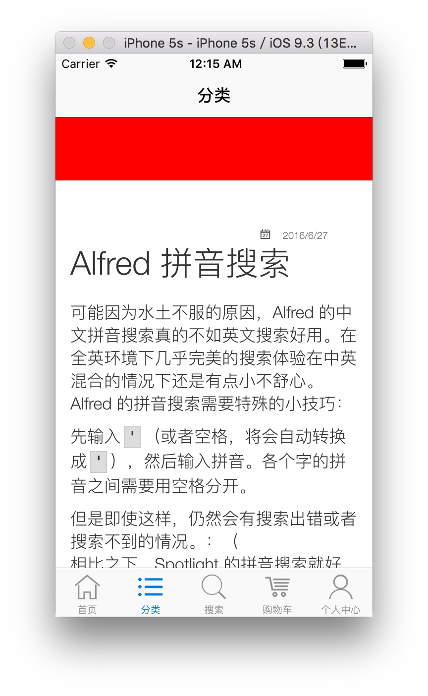

UILabel 图标保持比例缩放
Just set that:
button.imageView?.contentMode = .ScaleAspectFit
TAG: iOS, Xcode, UILabel, UIButton, image, icon, ScaleAspectFit, Adjust
Just set that:
button.imageView?.contentMode = .ScaleAspectFit
TAG: iOS, Xcode, UILabel, UIButton, image, icon, ScaleAspectFit, Adjust
开启手机的Root权限。（开放Root权限会失去保修，慎重考虑）
在 Terminal 下定位到 sdk/platform-tools 文件夹下，运行
su
chmod 777 /data
因为 adb shell 的无法添加-R参数递归修改权限，所以用adb必须要一级一级文件夹修改权限，而且...我运行chmod后提示“Unable to chmod /data: Operation not permitted ”。所以..
记住自己adb 程序的目录位置，如在我的电脑中是：/Users/android-sdk-macosx/platform-tools/
terminal 中输入
touch .bash_profile
open -e .bash_profile
该命令会自动打开文本编辑器。
(1) 如果你发现里面已经有内容了，请在 PATH 后面添加
:/Users/android-sdk-macosx/platform-tools/
包括最前面的英文状态下的冒号。如果 PATH 后面的路径被双引号括了起来，那么请把上面这句添加到双引号的里面。
(2) 如果你打开的文件是空白的，请输入
export PATH=${PATH}:/Users/android-sdk-macosx/platform-tools/
保存后关闭。
source .bash_profile
死坑死坑，新买的手机竟然不能用来调试。今天终于被我查到解决办法了（应该说终于有大神写的解决办法被收录然后被我查到了）。
ps:本解决办法同样适用于 MX4 & 魅蓝
在 Mac 下，修改 adb_usb.ini 文件（Mac 是在/Users/[username]/.android/adb_usb.ini 目录下，username 即是你的用户名；Windows 是在/Users/user/.android 目录下），往里面添加新的一行
0x2a45

保存退出。
在命令行下依次输入：
adb kill-server
adb devices
这时会显示

此时，adb 识别到手机，但是提示未认证。
在点亮手机屏幕的情况下，用 adb 连接手机，手机会提示你认证这台电脑，确认即可。
如果输入 adb 显示 command not found，这表示你的Mac 上未配置 adb 环境变量。
可以参考我的另一篇博文进行配置。
参考：
wispy316的专栏
It's necessary to convert custom object to NSData when using NSUserDefaults or NSKeyedArchiver. Furthermore, a dictionary or an array with custom class.
Here shows steps to do it.
class Book: NSObject, NSCoding {
var id:Int
var name:String?
var author:String?
private static let KeyId = "key_id"
private static let KeyName = "key_name"
private static let KeyAuthor = "key_author"
init(id: Int){
self.id = id
}
required init? (coder aDecoder: NSCoder){
self.id = aDecoder.decodeIntegerForKey(Book.KeyId)
self.name = aDecoder.decodeObjectForKey(Book.KeyName) as? String
self.author = aDecoder.decodeObjectForKey(Book.KeyAuthor) as? String
}
func encodeWithCoder(aCoder: NSCoder) {
aCoder.encodeInteger(id, forKey: Book.KeyId)
aCoder.encodeObject(name, forKey: Book.KeyName)
aCoder.encodeObject(author, forKey: Book.KeyAuthor)
}
}
You must extend your class from NSObject and implement the NSCoding protocal. Thus, you get init(coder:) and encodeWithCoder(aCode:)
let book = Book(id: 1)
book.name = "The first book"
book.author = "IMLC.ME"
let book2 = Book(id:2)
book.name = "The second book"
book.author = "IMLC.ME"
let books = [book, book2]
let ud = NSUserDefaults.standardUserDefaults()
ud.setObject(NSKeyedArchiver.archivedDataWithRootObject(book), forKey: "book")
ud.setObject(NSKeyedArchiver.archivedDataWithRootObject(book), forKey: "book-array")
The code above shows how to save book and books (an array) into NSUserDefaults.
if let bookData = ud.objectForKey("book") as? NSData,
let bookArrayData = ud.objectForKey("book-array") as? NSData{
let restoredBook = NSKeyedUnarchiver.unarchiveObjectWithData(bookData) as? Book
let restoredBookArray = NSKeyedUnarchiver.unarchiveObjectWithData(bookArrayData) as? [Book]
print("Restored book \(restoredBook.name!) and book array [\(restoredBookArray[0].name!),\(restoredBookArray[1].name!)]")
}
Saving and loading data with swift dictionary is very similar to array, I wouldn't give an another sample here.
TAG: Swift, NSData, Convert, Custom class
最近网盘行业风波不断，网盘供应商不是停止服务就是限制服务。当年网盘风头莫名其妙刮了起来，各大互联网公司用了疯狂赠送空间，不要钱地去推广，换来了今天人走茶凉，继续运营没有盈利，停止运营对不起用户的尴尬状况。国内的市场真的很浮躁，当年的网盘、微博、手游，现在的可穿戴设备、直播，土豪们一掷千金抢占市场，然后把整个行业给玩坏了。
国内的巨头们鲜有老老实实做生意的，百度尤甚。当初因巨额的空间入了百度网盘的坑。把图片、视频、镜像文件等大尺寸资源备份到百度网盘；word、pdf、各种使用频率高而Size不大的文件同步到坚果云。之前一段时间用得是相当舒心。但是现在，由于最近的网盘整顿风波，加之发现百度网盘可以未经允许读取用户文件（老司机跟我说现在百度下不了小电影了，个人空间上的小电影会被百度检查出来），决定还是要逐步脱坑。
想来百度要死也不会在这几天死，先解决隐私问题。
逛异次元的时候看到了这篇文章（VeraCrypt - 最佳免费开源跨平台的文件加密工具 (支持U盘加密/硬盘分区加密)），发现这是一个很不错的解决方案。
VeraCrypt 会在电脑上创建一个虚拟的加密磁盘，该虚拟磁盘以单个文件的形式保存在本地硬盘上。使用各网盘的同步工具可以很轻松地同步整个虚拟磁盘。而需要访问该虚拟磁盘的时候，挂在该虚拟磁盘文件，输入密码，即刻执行文件的增删查改操作。VeraCrypt 为加密而生，AES 的加密强度还是让人放心。
使用 VeraCrypt 创建加密磁盘的方法只略微增加了操作步骤，但是极大地提高了文件安全性，再也不用担心网盘供应商随意浏览你的文件了。同时，我们可以只把需要保密的文件丢入磁盘中，而电影、音乐、软件安装包等大文件，而且又不担心别人访问的资源，可以直接同步而不放入加密磁盘。这样因为加密而带来的不便就大大减少了。
（某度没节操也不是一两天了，想着自己同步到网盘的文件被内部员工随意浏览，哪天出BUG了外部人员可以随意访问用户文件，或者某度又为了利益出卖了用户，种种的“意外”我就不得安心）。
另外，VeraCrypt 提供了密钥、加密文件等多种验证方法，同时可以添加对整个硬盘加密或者对U盘加密，根据需要可以加密电脑上的其他文件。毕竟电脑只要联网，就有可能被入侵。还是要提高一下安全意识。
如果只有简单的加密需求，其实系统内置的 DMG 磁盘文件功能更加方便。".dmg" 文件相信大家都不陌生，dmg 文件常见于应用安装包。开发者将应用的可运行文件打包到虚拟磁盘中，供用户下载。用户下载到电脑上，直接双击挂载磁盘，即可访问虚拟磁盘中的文件。
DMG 文件是可以加密的。如果我们使用加密的 DMG文件来保存我们的隐私文件，由于系统本身对该文件的支持，我们会获得比 VeraCrypt 更好的体验。
打开 Disk Utility (磁盘工具) 应用，按下 "⌘N" （或者点击菜单栏的文件 -> 新建映像 -> 空白映像）。

加密方法可以选择 AES128 或 AES256，看个人喜好。
映像格式需要解释一下。可选的格式有稀疏磁盘映像、读/写磁盘映像 和 DVD/CD 主映像。DVD那个不用管，读/写磁盘映像即是我们下载应用安装包的那个格式（.dmg），其实有可读写和只读两种形式。磁盘大小在创建时确定，此后不可变。
而稀疏磁盘映像则是创建后磁盘大小可以根据磁盘储存文件的大小来动态调整（初次生成时，磁盘文件为创建时指定的文件大小。在挂载卸载后，磁盘随即调整自身尺寸）。该格式被用于系统自带的磁盘加密 FileVault 功能。
而稀疏捆绑磁盘映像，该格式被用于 Time Machine 。更适用于文件备份。
（其实我也不是很懂，具体请参考wikipedia-稀疏磁盘映像）。
显然，我们应该选稀疏磁盘映像，至于捆不捆绑，我觉得无所谓了。
双击刚才创建的虚拟磁盘文件，按照系统提示输入密码，即可访问该磁盘。如果你启用了 KeyChain，那么系统会提示你是否保存密码。如果你保存了密码，下次挂载该磁盘，系统会自动读取密码，避免手动输入。
为了方便，我选择了保存密码，酱紫我在本机就可以像未加密映像一样使用了。毕竟我只想我的文件在同步到网盘后不会被其他人读取而已。
聪明的人在创建时即保存到同步目录了。不聪明的我们，事后把文件转移到百度云同步盘、坚果云同步盘、OneDrive、iCloud Drive 或 Dropbox。
TAG: 网盘, 加密, 同步, 稀疏磁盘映像
可能因为水土不服的原因，Alfred 的中文拼音搜索真的不如英文搜索好用。在全英环境下几乎完美的搜索体验在中英混合的情况下还是有点小不舒心。Alfred 的拼音搜索需要特殊的小技巧：
先输入'（或者空格，将会自动转换成'），然后输入拼音。各个字的拼音之间需要用空格分开。
但是即使这样，仍然会有搜索出错或者搜索不到的情况。：（
相比之下，Spotlight 的拼音搜索就好很多了。还是不能使用 Alfred 完全代替 Spotlight 啊 T,T
I embeded my common view controller which contains a UIWebView in navigation controller. Before I do that, my UIWebView worked prefectly. After that, a blank area places both above and under my html content.

写着写着代码，终于忍受不了在Xcode、Emulator、Chrome、Dash等应用中切来切去的麻烦。Dock栏可不是那么好点的。于是花了一段时间查找Mac上有哪些App可以实现快捷键切换应用程序。
最后，终于挑定了一款应用的时候，突然想起来 Alfred 来。于是尝试了一下，效果完美。
Alfred 无愧神器之名：）
Add a blank workflow, fill the name, description and other field Alfred required.
Click the "+" button on the upper right, select the Trigger -> Hotkey. Now a new window shows, type the Hotkey you want to use.
Click the "+" button, this time select the Action -> Launch Apps/ Files. Drop the app you want to open from Finder to Alfred.
Link the hotkey trigger to the launch apps action. Done!

最终效果是，在 Chrome 还没有打开的情况下，将启动 Chrome。如果 Chrome 已经启动，则切换到 Chrome。
It's necessary to convert custom object to NSData when using NSUserDefaults or NSKeyedArchiver. Furthermore, a dictionary or an array with custom class.
Here shows steps to do it.
class Book: NSObject, NSCoding {
var id:Int
var name:String?
var author:String?
private static let KeyId = "key_id"
private static let KeyName = "key_name"
private static let KeyAuthor = "key_author"
init(id: Int){
self.id = id
}
required init? (coder aDecoder: NSCoder){
self.id = aDecoder.decodeIntegerForKey(Book.KeyId)
self.name = aDecoder.decodeObjectForKey(Book.KeyName) as? String
self.author = aDecoder.decodeObjectForKey(Book.KeyAuthor) as? String
}
func encodeWithCoder(aCoder: NSCoder) {
aCoder.encodeInteger(id, forKey: Book.KeyId)
aCoder.encodeObject(name, forKey: Book.KeyName)
aCoder.encodeObject(author, forKey: Book.KeyAuthor)
}
}
You must extend your class from NSObject and implement the NSCoding protocal. Thus, you get init(coder:) and encodeWithCoder(aCode:)
let book = Book(id: 1)
book.name = "The first book"
book.author = "IMLC.ME"
let book2 = Book(id:2)
book.name = "The second book"
book.author = "IMLC.ME"
let books = [book, book2]
let ud = NSUserDefaults.standardUserDefaults()
ud.setObject(NSKeyedArchiver.archivedDataWithRootObject(book), forKey: "book")
ud.setObject(NSKeyedArchiver.archivedDataWithRootObject(book), forKey: "book-array")
The code above shows how to save book and books (an array) into NSUserDefaults.
if let bookData = ud.objectForKey("book") as? NSData,
let bookArrayData = ud.objectForKey("book-array") as? NSData{
let restoredBook = NSKeyedUnarchiver.unarchiveObjectWithData(bookData) as? Book
let restoredBookArray = NSKeyedUnarchiver.unarchiveObjectWithData(bookArrayData) as? [Book]
print("Restored book \(restoredBook.name!) and book array [\(restoredBookArray[0].name!),\(restoredBookArray[1].name!)]")
}
Saving and loading data with swift dictionary is very similar to array, I wouldn't give an another sample here.
TAG: Swift, NSData, Convert, Custom class